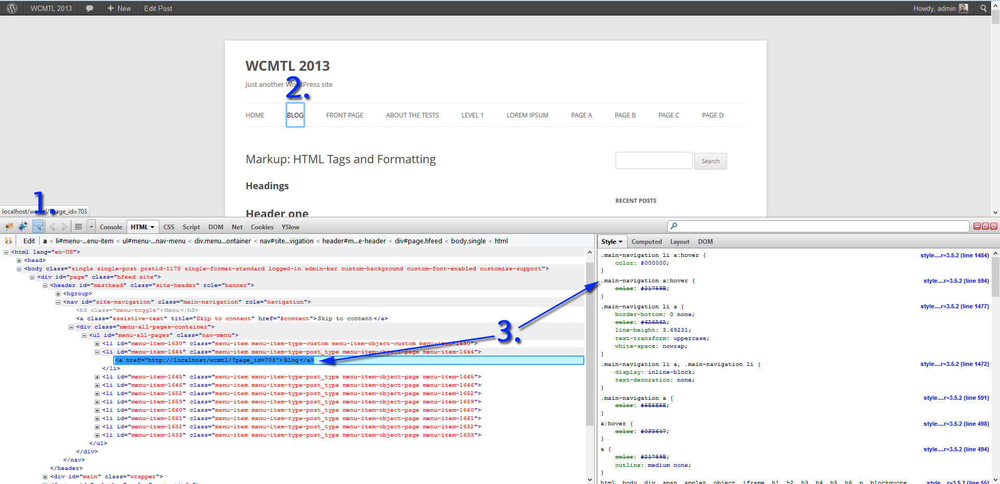

Changing a button’s colour without annihilating the universe
Who?
Michal Bluma
Hi, I’m Michal Bluma.
I’ve been working on and around the web for many years. I’ve only recently taken the leap to work on websites full-time. After ten years of office/clerical work, and doing most of my webwork on the side, I decided to quit my job and concentrate on building sites for a living on my own.
Destroying the universe, one code change at a time
WordPress makes it super easy to jump in and get going
Automated install scripts like Fantastico
This also makes it incredibly easy to take up wrong habits in how you work with WordPress.
Trouble with the (learning) curve
Many new users have a similar approach when they start out
- Setup WordPress
- Figure out their way around the Admin interface
- Find a theme
- Want to modify the theme
“Hmm… It looks awesome, but I wish the menu buttons were highlighted in blue rather than turquoise.”
“If only that sidebar was wider.”
Making your first change
- Google “How do I change XXXX in WordPress?”
- Sometimes they’ll try posting their question on the WordPress.org forums* * On that note, check out Kathryn Presner’s talk on getting good support: Help Me Help You: The Art and Science of Getting Good WordPress Support
- The answer they’ll often find is
You need to change the CSS.
Ok. How?
Just edit
style.css
- The user then discovers the
\wp-content\themes\folder, opens up their theme’s folder and goes to town on thestyle.cssfile
Don't... just don't. No, really. Don't.
New users tend to make all their changes directly in style.css.
I did it! I did it! I <3 you WordPress!
A few weeks go by...
Ooooh! A theme update. Let's install it!
WordPress, what happened?!?
Why do you hate me so?
What really happened
When a theme is updated, it overwrites the theme’s files with the new ones.
All the files are overwritten in the theme folder.
All your changes will disappear.
Can’t the theme just change some files?
The idea of updates is that they change, fix, make better,…
You want the latest, bestest, most secure, most functional version.
All I want to do is change this one style. Can I make the change, and simply re-do it each time the theme updates?
Sure you can!
...but instead, let's just do it right from the get-go.
That line of CSS you overwrote in style.css?
Gone
That slight mod you made to the functions.php file after reading for hours online?
Bye bye
Those changes you made to that template file?
Sayonara, sucker!
If you’re going to do it, do it right once and you’ll be glad you did.
The next time you want to make extra changes, you’ll already be set up. You’ll have a method to add as many changes as you want that will be update-proof.*
* caveat: This will really depend on the theme’s quality, the amount of changes you’ve made, and all sorts of other factors.Different ways of applying changes to a theme
- A custom CSS plugin
- A
custom.cssfile - Custom CSS Theme options
- Build a Child Theme
A custom CSS plugin
There are plugins that let you add custom CSS in the Admin interface.
Custom CSS plugins
- The first time I saw something like this, personally, was in Briefcase, a plugin that complemented PressWork a project by c.bavota and Brendan Sera-Shriar
- A very popular way is the Custom CSS module in JetPack
- Other plugins like Custom CSS Manager
There are many plugins like this
The general idea should be that they create a section in your Admin panel that lets you insert custom CSS rules that are loaded after the stylesheets used in/enqueued by the theme. This way your rules overwrite the previously defined ones.
Advantage: The plugin won’t be directly dependant on your theme.
Theme updates might affect the classes/IDs you need to specify in your custom styles, but they won’t overwrite your CSS.
A custom.css file
A file named custom.css that is loaded by the Theme
Some themes also give you the option of putting a custom.css file (or a variation on the filename) in the theme folder. This becomes a bit of an exception to the “Never alter any files in the Theme’s folder”.
Generally, the idea is that you create the file as specified by the Theme author and add in your custom CSS. When the theme does its thang, it will look in the specified place for the specified filename. If the theme finds one, it will enqueue it after all the other stylesheets / rules.
One thing to keep in mind:
An author could try to be super nice and include a custom.css file for you, ready to be edited. One tiny hiccup you could have was if you update the theme and the custom.css gets overwritten with the one in the new version of the theme.
Always keep a copy of your custom.css somewhere safe, just in case.
Custom CSS Theme Options
An options panel in the Admin backend that lets you specify custom CSS rules
Some Theme authors can decide to add an options panel/section/page to their theme that lets you add custom CSS rules. In theory, these rules would be loaded after the ones included with the theme.
One big advantage of this approach is that your CSS rules should be saved as an entry in the WordPress database, rather than inside a file. That should make the theme upgrade process safe.
Build a Child Theme
The reason you're here. :)
What are Child Themes?
A Child Theme...
- Depends on the Parent Theme
- Implements the Parent Theme's styling and functions
- Overrides the Parent Theme's styling and/or functions
- Is not affected by the Parent Theme's updates** The Child Theme's files aren't affected nor overwritten.
The Parent Theme could decide to change classes, IDs, functions, function names and its functionality among other things
ThemeX (an example)
- ThemeX's menu buttons are Green
- You create a child theme and change the menu buttons to Red
- You update ThemeX
- ThemeX's author decided to make the menu buttons Yellow
Guess what?
Because you set up your own Child theme, the buttons’ colour remains unaffected: it’s still Red like you made it.
Figuring out which CSS changes we want to make
Before we can talk about where to place your CSS changes, let’s quickly look at how to find what we want to change.
“That button” won’t get you very far. To change its appearance we need a way to specify which element to change.
Tools
Two of the most popular tools depend on your browser of choice:
Use Firefox?
Get FireBug
Use Chrome?
Use Chrome's DevTools
* already included in Chrome
There are many other debugging tools. One is actually included with Firefox. There’s one in Internet Explorer.
These tools will become your new best friend when trying to modify your theme’s appearance.
- Get your pipe
- Put on your deerstalker
- Let's go solve this CSS mystery
Let's do this!
FireBug to the rescue
We'll be using FireBug today.
The same concepts apply to most of these tools
Open up FireBug with F12
Finding an element in FireBug
- Activate the inspector's selection tool
- Click on the element you want to learn more about
- Now analyse it within the DOM, and look at its rules in the right pane
By looking at the CSS affecting our menu's link, we can see that its colour is set to grey
Let's prepare some CSS to change it to Blue.
We'll be going with #0099ff for our Blue.
.main-navigation li a {
colour: #0099ff; /* Blue */
}
For now, let's set this piece of code aside and start learning where we can stick it.
Specificity
CSS stands for “Cascading Style Sheets”.
The “cascading” bit means that, while reading the CSS from top to bottom, it takes properties and keeps overriding them.
Pop Quiz, Hotshot!
There's a header with a class of .entry-title and an ID of #awesomesauce
Given the following rules, what colour will it be?
Awesome Title
#awesomesauce {
color: blue;
}
body.single-post header h2.entry-title {
color: red;
}
Answer:
Blue
An !important note
We’ll get back to it in a bit, but try to avoid using the !important CSS trick when possible.
But I just put it in and it worked. What’s wrong with that?”
It can be a symptom of badly written CSS on the Theme author’s behalf.
Try to see if you can’t simply be a little more specific in your own CSS when overwriting the rule.
Let's finally start building that Child Theme
The setup
I'm going to assume that you're working in your local dev environment, and not on the live server
...right? riiiiiiiight?
If not, you should check out Build a Website on the Moon: WordPress Development from Anywhere and Priming Your WordPress Canvas – Essentials for a Solid Foundation
The setup
- We'll be creating a Child Theme based on Twenty Twelve
- Our Child Theme's name will be Twelve Child
The setup
- In a file explorer, navigate to your
\wp-content\themes\folder - Notice that the folder for Twenty Twelve is named
\twentytwelve\.
Jot down the folder name of the Parent Theme
The setup
- Within the
\wp-content\themes\folder, create a new folder called\twelvechild\
- Navigate into the
\twelvechild\folder - Create an empty text file named
style.css
The style.css file
- Open the newly created
style.cssfile in your favourite editor - At the top of the file, enter the following:
(While we're at it, we'll also add in the custom CSS for our menu buttons)
/*
Theme Name: Twelve Child
Theme URI: http://isotrope.net/
Description: Twenty Twelve is awesome!
Author: Michal Bluma
Author URI: http://isotrope.net/
Template: twentytwelve
Version: 0.1.0
*/
.main-navigation li a {
color: #0099ff; /* Blue */
}
Save the file
We're done!
That's it. You now have a Child Theme.
Were you expecting it to be harder than that?
Well, it isn't.
Really.
...just the same, let's expand on a few things...
The style.css file
The two most important parts of the style.css declaration are
Theme Name: Twelve Child
Template: twentytwelve
Our theme needs to have a name, but we also need to tell it where to find the Parent Theme's folder.
Remember how we wrote down our Parent Theme's folder name?
This is where we write it.
Note: You want to enter the theme's folder name (twentytwelve), and not the theme name (Twenty Twelve).
Twelve Child, ACTIVATE!
- Log into your WordPress Admin backend
- From the Admin menu, go to Appearance->Themes
- Look at that! Our new Child Theme is there:
- Click the Activate button
Woohoo!!!
We've just created a Child Th....
...ummmm....
Well. That's not right!

What just happened?
The Child Theme's style.css will be loaded instead of the Parent Theme's style.css
Don't worry. There's an easy fix.
...and notice how all the menu items are all nice and Blue :)
Keeping the Parent Theme's CSS rules
Simply open your \wp-content\themes\twelvechild\style.css file, and add in a line to load the Twenty Twelve style.css.
@import url("../twentytwelve/style.css");
Place this line after your style.css Child Theme declaration but before any of your own CSS.
Version: 0.1.0
*/
@import url("../twentytwelve/style.css");
.main-navigation li a {
We're back on track!
Beautiful Blue menu items and all the styling present in Twenty Twelve
Let's get some JavaScript in here
AKA Adding JavaScript while hitting all the wrong obstacles
(for demonstrational purposes, of course)
Adding a JS library to your Child Theme
We're going to start by creating a file for our own custom JavaScript:
- Navigate to your
\wp-content\themes\twelvechild\folder - Create a new folder called
\js\ - Within that folder, create a file named
myscript.js - Open the file in the editor of your choice
Adding a bit of code
For the purpose of this example, we'll be adding the window's width to our site title
- But, why? This example has no real-world use
- It's to illustrate a couple of points
- Ok. I guess...
Adding a bit of code
Let's add the following lines to our myscript.js file
$( document ).ready( function() {
var iWidth = $( window ).width(),
$siteTitleText = $( '#masthead' ).find( '.site-title a' ),
strSiteTitle = $siteTitleText.text();
$siteTitleText.text( strSiteTitle + ' : ' + iWidth + 'px edition' );
} );
Basically, once the DOM is fully loaded, we're:
- Grabbing the window's width into a variable.
- We're saving the current site-title inside a variable.
- We're then replacing the title's text with "the site title" and a " : " splitter, then the window's width
Let's try out this fancy pants script
Hmmm...
Nothing's happening
We have to actually **tell** WordPress about our myscript.js file
There's a WP function just for this: wp_enqueue_script()
We also have to "enqueue" it at the right moment.
WordPress goes through many steps when it's preparing your page. Once of these steps is called wp_enqueue_scripts
We want to tell WordPress «Hey buddy. When you're enqueing scripts, would you mind also adding this one?»
functions.php
Before we start adding all this code, we need to create another file:
- Within your
\wp-content\themes\twelvechild\folder, create a file namedfunctions.phpMake sure you're in the correct folder, and not still in your \js\ subfolder - Open the file and add in the following lines of code:
<?php add_action( 'wp_enqueue_scripts', 'add_child_scripts' ); function add_child_scripts() { wp_enqueue_script('jquery'); wp_enqueue_script( 'childscript', get_stylesheet_directory_uri() . '/js/myscript.js' ); } //twelvechild_scripts() - Save the file and reload your site
Still nothing.
Does this guy actually know what he's talking about?
Within FireBug, let's check out the Script panel:
It's there!
So, what's going on??
When working with JavaScript, always check your "console"
$ is not a function
If you've tried writing some JavaScript that leverages the jQuery library, you're probably used to using the $ sign.
So, why are we getting an error?
WordPress loads jQuery in .noConflict() mode
Stepping into the .noConflict() zone
Essentially, WordPress is actually protecting you.
There are many other libraries out there. jQuery isn't the only one using $
Fear not, not all is lost.
Long explanation...
...there won't be one today
Make sure to surround all your JavaScript with this code:
( function( $ ) {
// Place your code here
} )( jQuery );
Let's get that title working!
- Go back into
myscript.js - Change the code to:
( function( $ ) { $( document ).ready( function() { var iWidth = $( window ).width(), $siteTitleText = $( '#masthead' ).find( '.site-title a' ), strSiteTitle = $siteTitleText.text(); $siteTitleText.text( strSiteTitle + ' : ' + iWidth + 'px edition' ); } ); } )( jQuery );